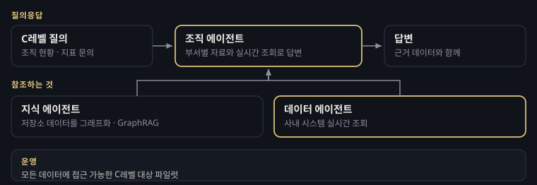
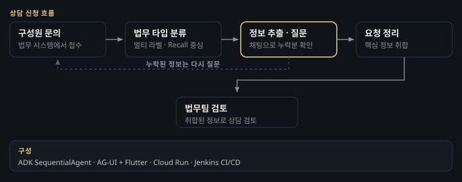
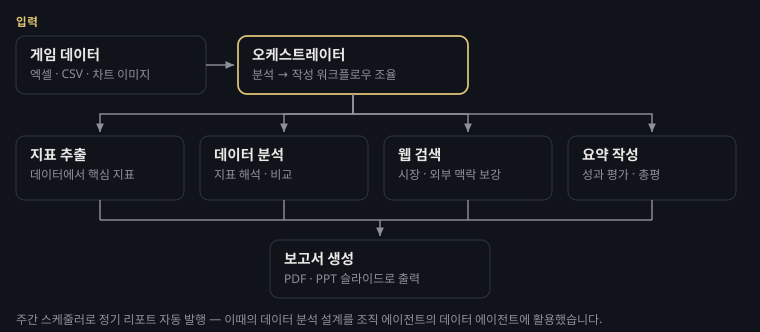
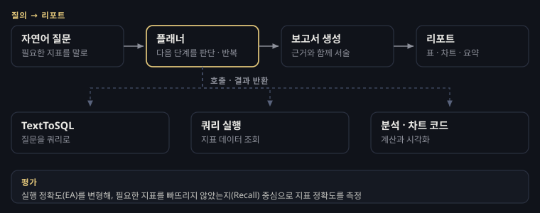
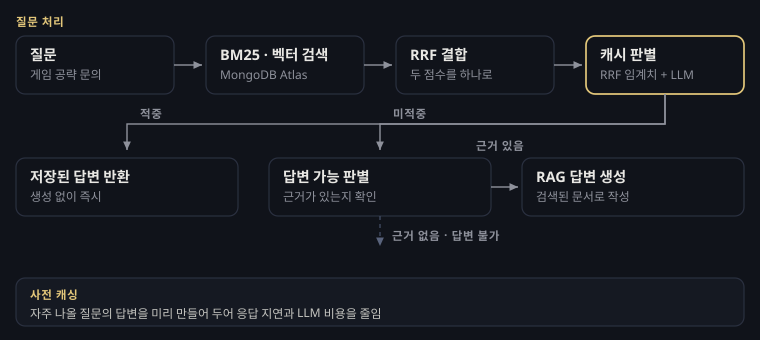

조직 에이전트
2025.11 –임원이 조직 현황을 물으려면 부서마다 흩어진 데이터와 시스템을 사람이 모아야 했습니다. 조직 에이전트는 그 경계를 넘어, 조직 전체의 데이터를 가로질러 한 번에 답하는 것을 목표로 합니다.
각 부서가 저장소에 올린 핵심 데이터는 지식 에이전트가 그래프로 만들어 GraphRAG로 답하고, 실시간 조회가 필요한 부분은 데이터 에이전트로부터 불러옵니다. 두 경로를 함께 써서 저장된 지식과 현재 상태를 같이 근거로 삼는 답변을 만듭니다. 저는 여기서 데이터 에이전트를 담당했습니다. 게임 지표를 묻는 질문을 받으면 지표 계산 · 심층 분석 · 코드 실행을 도구처럼 나눠 부려 답을 만들고, 조직 에이전트가 그대로 불러 쓸 수 있도록 표준 창구로 열어뒀습니다.

MarbleLaws — 법무 상담 어시스턴트
2025.08 –사내 구성원이 법무 상담을 신청할 때 필수 정보를 빠뜨리는 경우가 많았고, 그때마다 법무팀이 같은 내용을 여러 차례 되물어야 했습니다. 반복되는 확인 작업이 그대로 법무팀의 업무 부담이 됐습니다.
MarbleLaws는 사내 법무 시스템에 내장되어, AI가 채팅으로 법무 분석에 필요한 핵심 정보를 추출·질문·취합합니다. 필요한 정보를 빠뜨리지 않는 것을 기준으로 내부 평가하고, 법무팀이 직접 채점합니다.

사업부를 위한 데이터 리포트 에이전트
2025.10 – 2025.12사업부가 게임 성과를 보고하려면 데이터를 뽑고, 지표를 해석하고, 보고서로 옮겨 적는 일을 매번 손으로 반복해야 했습니다.
매니저 에이전트가 워크플로우를 조율하고, 지표 추출 · 데이터 분석 · 웹 검색 · 요약 작성 전문 에이전트들이 협업해 엑셀·CSV·차트 이미지를 읽고 PDF·PPT 보고서까지 자동 생성합니다. 주간 스케줄러로 정기 리포트도 자동 발행됩니다. 여기서 만든 데이터 분석 축이 조직 에이전트의 데이터 에이전트로 이어졌습니다.

지표AI POC
2023.11 – 2024.04타 사 DX 부서의 협업 요청으로 시작한 검증 과제입니다. 지표를 말로 물어보면 에이전트가 알아서 쿼리를 만들고 리포트까지 써 줄 수 있는가를 확인하는 것이 목표였습니다.
플래너가 질문을 보고 다음에 무엇을 할지 판단하면, TextToSQL·쿼리 실행·분석 코드 생성 같은 도구가 순서대로 호출되고 그 결과로 보고서를 씁니다. 정답 쿼리 하나만 맞히는 방식으로는 실무 품질을 알 수 없어서, 필요한 지표를 빠뜨리지 않았는지를 보는 평가 기준을 따로 정의했습니다. 웹 UI도 직접 만들었습니다.

아스달 연대기 지식의 서
2023.10 – 2024.05게임 출시에 맞춰 공략 정보를 답해 주는 B2C RAG 챗봇의 검색 엔진을 만들었습니다. 불특정 다수가 쓰는 서비스라 응답 지연과 LLM 비용이 그대로 서비스 품질이 됐습니다.
단어가 일치하는 문서와 의미가 비슷한 문서를 동시에 찾아 하나로 합쳤고, 게임 고유명사를 먼저 인식하도록 한국어 처리를 손봤습니다. 여기에 사전 캐싱을 붙여 자주 나올 질문은 검색·생성 없이 바로 답하게 했고, 근거가 없는 질문은 답변 불가로 걸러냈습니다. 문서 전처리와 서비스 운영, 부서 간 소통도 함께 맡았습니다. 이때 만든 검색 구조가 이후 MARGE로 이어졌습니다.
